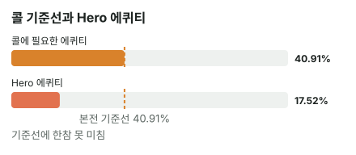

안녕하세요. 9♦8♦로 T-7 플랍을 맞으면 6이나 J 어느 쪽이 와도 스트레이트라 설레죠. 그런데 턴에 상대가 남은 칩을 전부 밀어 넣으면 이야기가 달라져요.
오늘은 그 장면을 끝까지 따라가요. 올인이라 리버에 더 받을 돈도, 더 잃을 돈도 없어서 지금 숫자 하나로 결론이 깔끔하게 나는 장면이에요. 그 대신 숫자 하나하나를 정확히 세야 해요.
이 글에서 배울 것
- 큰 올인 앞에서 필요 에퀴티가 얼마나 올라가는지, 그리고 그게 "몇 번 중 몇 번 맞아야" 하는 숫자인지
- 리버 한 장 남은 양방 드로우의 아웃츠 확률과, 상대 손이 내 아웃츠를 쥐고 있을 때 생기는 차이
- 올인에서는 맞았을 때 더 받을 돈(임플라이드 오즈)이 0이라 지금 숫자로 결론이 끝난다는 것
오늘의 핸드
Hero (BB · 스택 30BB) · 상대 (BTN · 같은 스택)


프리플랍 · 팟 1.5BB
상대(BTN) 2.5BB 오픈 → SB 폴드 → Hero 콜
팟 5.5BB
플랍 · 팟 5.5BB


Hero 체크 → 상대 2.75BB 벳(팟의 절반) → Hero 콜
Hero는 아직 하이카드예요. 대신 T-9-8-7이 이어져 있어서 아래쪽 6이나 위쪽 J가 오면 스트레이트예요. 이렇게 양쪽 끝이 다 열린 드로우를 양방 스트레이트 드로우(오픈엔디드)라고 해요.
턴 · 팟 11BB


턴 3♣로 Hero 핸드는 바뀌지 않았어요. 여전히 하이카드에 양방 드로우예요. 다만 보드 클럽이 두 장(T♣·3♣)이 돼서, 클럽 두 장을 든 상대에게는 플러시 드로우가 생겼어요.
Hero 체크 → 상대 24.75BB 올인(팟의 2.25배) → Hero는 콜? 폴드?
Hero에게 남은 칩도 딱 24.75BB라 콜하면 Hero도 올인이고, 리버 한 장으로 끝나요.
결론부터 말할게요. 오늘 가정한 상대 레인지라면 폴드가 이득입니다. 콜하면 한 번에 평균 약 14.15BB 손해예요. 리버 한 장으로 끝나는 콜이라 이 손익이 그대로 남아요.
1단계. 필요 에퀴티: 상대가 크게 걸수록 올라가요
필요 에퀴티(B06에서 배웠죠)는 콜이 본전이 되려면 가져와야 하는 팟의 몫이에요.
필요 에퀴티 = 24.75(Hero 콜) ÷ (11(원래 팟) + 24.75(상대 벳) + 24.75(Hero 콜)) = 24.75 ÷ 60.5 = 약 40.9%
몇 번 맞아야 본전일까
제목의 질문을 그대로 따져 볼게요. 이 콜을 100번 한다고 해 봐요. Hero는 매번 24.75BB를 밀어 넣으니, 100번이면 24.75 × 100 = 2475만큼 내요.
이기는 판에서는 콜한 뒤 팟 60.5BB를 통째로 가져와요(내가 낸 콜도 돌아오니까요). 그러니 본전이 되려면 이긴 횟수 × 60.5가 2475와 같아야 하고, 2475를 60.5로 나누면 100번 중 약 41번이에요.
이게 무슨 뜻이냐면, 오늘 Hero는 10번 중 4번 넘게 리버에서 이겨야 콜이 본전이라는 거예요. 드로우로 이 정도를 맞추기는 쉽지 않겠죠. 아래에서 실제로 몇 번 맞는지 세어 볼게요.
왜 절반 가까이까지 올라갈까
식을 보면 분자는 Hero 콜, 분모는 원래 팟 + 상대 벳 + Hero 콜이에요. 상대 벳이 커질수록 Hero 콜도 똑같이 커지니, 분모에서 원래 팟 11BB가 차지하는 몫이 점점 작아져요. 원래 팟이 무시할 만큼 작아지면 식은 "콜 ÷ (콜 + 콜)"에 가까워지고, 그게 절반이에요.
그래서 상대 벳이 팟보다 훨씬 크면 필요 에퀴티는 절반을 향해 올라가요. 오늘은 팟의 2.25배라 약 40.9%까지 왔어요. 큰 올인은 "드로우로는 따라오지 마"라는 가격표인 셈이에요.
2단계. 아웃츠: 리버 한 장
세기
Hero가 아는 카드는 손 2장 + 보드 4장 = 6장이라, 모르는 카드는 46장이에요. 그중 6이 4장, J가 4장, 아웃츠 8장이에요.
리버에 맞을 확률 = 8 ÷ 46 = 약 17.39%
빨리 어림하면 아웃츠 × 2 = 16, 즉 16% 근처예요(2·4 법칙, I02에서 배웠죠).
깨끗한 아웃츠인지
6이나 J가 와서 스트레이트가 되면, 아래 3단계에서 가정할 상대 레인지의 어떤 핸드에도 Hero가 이겨요. 6과 J는 보드 카드와 짝이 안 맞아서 셋(TT·77)이 풀하우스로 올라갈 수 없고, 가정 레인지에는 클럽 두 장 핸드가 없어서 6♣·J♣가 와도 상대 플러시가 생기지 않아요. 그래서 이 레인지를 상대로는 8장 모두 깨끗해요.
3단계. 상대는 무엇으로 올인할까 (가정 레인지)
가정
상대가 턴에 이렇게 크게 올인하는 핸드를 T 탑페어(AT·KT·QT·JT·같은 무늬 T9), 셋(TT·77), 99, JJ 이상 오버페어로 가정할게요.
| 핸드 | 콤보 | 왜 이 숫자? |
|---|---|---|
| AT·KT·QT·JT | 각 12 | T♣가 보드라 T는 3장 × 상대 숫자 4장 |
| T9s | 2 | T♣는 보드, 9♦는 Hero 손 → ♠·♥만 |
| TT·77 | 각 3 | 보드에 한 장 → 남은 3장에서 두 장 |
| 99 | 3 | 9♦가 Hero 손 → 남은 3장에서 두 장 |
| JJ·QQ·KK·AA | 각 6 | 보이는 카드 없음 → 6 |
| 합계 | 83 |
💡 빨리 세는 팁: 보드나 내 손에 같은 숫자가 한 장 있으면 그 페어는 6에서 3콤보, T가 보드에 있으면 T-x는 T 세 장과 상대 숫자 네 장을 짝지어 12콤보
전부 지금 Hero(하이카드)보다 앞선 핸드예요. Hero는 6이나 J가 와야만 이겨요.
상대가 내 아웃츠를 쥐고 있으면
이 레인지에 대한 Hero 에퀴티는 약 17.52%예요. 2단계의 약 17.39%와 거의 같은데, 조금 다른 이유가 있어요.
상대 핸드를 하나 정하면 상대 손 두 장도 빠져서 모르는 카드는 44장이 돼요. 그리고 상대가 J를 들고 있으면 Hero의 J 아웃츠가 줄어요.
- J도 6도 없는 핸드(AT·KT·QT·T9s·TT·77·99·QQ·KK·AA) 83 − 12 − 6 = 65개 조합: 아웃츠 8장
- JT 12콤보: J 하나가 상대 손 → 아웃츠 7장
- JJ 6콤보: J 둘이 상대 손 → 아웃츠 6장
Hero 에퀴티 = (65 × 8 + 12 × 7 + 6 × 6) ÷ (83 × 44) = 약 17.52%
분모가 44장으로 줄어 조금 올라가고, J를 쥔 핸드 때문에 조금 내려가서, 결과는 8 ÷ 46과 거의 같아졌어요. 이게 무슨 뜻이냐면, 상대 손에 내 아웃츠가 있으면 그 핸드를 상대로는 내 드로우가 그만큼 약해진다는 거예요. 상대가 J를 많이 쥔 레인지일수록 이 차이가 커져요.
4단계. 비교와 돈
| 숫자 | |
|---|---|
| 필요 에퀴티 | 약 40.9% |
| Hero 에퀴티 | 약 17.52% |
콜 손익 = 0.1752(이길 몫) × 35.75(이기면 버는 돈: 원래 팟 + 상대 벳) − 0.8248(질 몫) × 24.75(지면 잃는 Hero 콜) = 약 −14.15BB → 폴드
필요 에퀴티의 절반에도 못 미쳐요. 1단계처럼 100번 콜한다고 놓고 풀어 보면 이래요.
- 약 17번 반 이겨요. 이긴 판에서 받는 돈(원래 팟 + 상대 벳)을 다 더하면 약 626.51BB
- 약 82번 반 져요. 진 판에서 잃는 콜을 다 더하면 약 2041.27BB
- 합계 약 −1414.76BB
본전이려면 약 41번 이겨야 하는데, 실제로는 약 17번 반만 이겨요. "몇 번 맞아야"의 답과 "실제로 몇 번 맞나"의 차이가 그대로 손해가 됐어요.

왜 그럴까: 에퀴티는 꼼짝 않고, 벳 크기만 움직인다
3단계 표를 다시 보면, 가정한 83콤보는 전부 지금 Hero 9 하이보다 앞서 있어요. 그래서 Hero 에퀴티는 전부 리버 한 장, 6이나 J가 떨어지는 경우에서만 나와요. 상대가 T 탑페어든 셋이든 오버페어든, Hero 입장에서는 "8장 중 하나가 와야 이긴다"로 똑같아요.
이게 무슨 뜻이냐면, Hero 에퀴티는 상대가 어떤 강한 핸드를 들었는지에 거의 상관없이 17% 근처에 묶여 있다는 거예요. 움직이는 건 상대 손에 내 아웃츠(J)가 몇 장 있느냐 정도예요.
반대로 필요 에퀴티는 상대 벳 크기 하나로 크게 움직여요. 1단계에서 본 대로 벳이 커질수록 절반 쪽으로 올라가요. 그래서 이 결정은 사실상 "상대가 얼마를 걸었나"가 거의 전부예요. 묶여 있는 에퀴티와, 벳 크기가 정하는 필요 에퀴티를 맞대 보는 싸움이죠.
여기에 올인이라는 조건이 붙어서, 리버에 맞았을 때 더 받아낼 칩도 없어요. 지금 두 숫자를 비교한 결과가 이 콜의 결과 전부예요.
자주 하는 실수
실수 1. "맞으면 크게 받을 테니까" 하고 콜하기 드로우를 들면 "스트레이트가 되면 상대 스택을 다 받겠지"라는 생각이 먼저 들어요. 그런데 오늘 상대는 이미 남은 칩을 전부 걸었어요. Hero가 맞춰도 더 받을 칩이 하나도 없어서, 맞았을 때 버는 돈은 지금 팟 35.75BB가 끝이에요. 필요 에퀴티 약 40.9%도, Hero 에퀴티 약 17.52%도 그대로예요. 더 받을 돈을 기대해도 되는 건 상대에게 칩이 남아 있을 때만이에요.
실수 2. 필요 에퀴티를 셀 때 내 콜을 빼먹기 "상대 벳 ÷ 지금 팟"으로 24.75 ÷ 35.75를 하면 약 69.2%가 나와요. 내 콜이 이긴 쪽 팟에 들어가는 걸 빼먹은 거예요. 이 숫자는 블러프하는 쪽이 따지는 기준(상대가 얼마나 접어야 본전인지)과 같은 모양이라 헷갈리기 쉬워요. 콜하는 쪽 기준은 콜 ÷ 콜한 뒤 팟, 24.75 ÷ 60.5예요.
"양방 드로우면 꽤 좋은 드로우 아니에요?"
좋은 질문이에요. 좋은 드로우 맞아요. 다만 드로우의 가치는 세 가지에 달려 있어요.
- 남은 장수: 플랍이면 턴·리버 두 장을 보지만, 턴이면 한 장뿐이라 확률이 절반 가까이로 줄어요
- 가격: 상대 벳이 크면 필요 에퀴티가 올라가요
- 상대에게 남은 칩: 칩이 남아 있어야 맞았을 때 더 받을 수 있어요
오늘은 한 장, 큰 벳, 남은 칩 없음이라 세 가지가 다 불리했어요. 같은 9♦8♦라도 이 세 가지가 바뀌면 답이 달라질 수 있어요.
숫자가 뒤집히는 지점
기준은 두 가지예요.
- 필요 에퀴티가 Hero 에퀴티(약 17.52%) 아래로 내려오는 벳 크기
- 상대 레인지에 지금 Hero가 이기는 핸드나, 내 아웃츠를 망가뜨리는 핸드가 들어오는 때
선생님의 한마디
턴에 드로우로 큰 벳을 맞으면 이 순서로 봐요.
- 벳이 팟의 몇 배인지부터 봐요: 팟보다 크면 필요 에퀴티가 절반 쪽으로 올라가 있다고 생각해요
- 아웃츠를 세면서 보드 짝·플러시·상대 손으로 줄어드는 카드가 없는지 봐요
- 아웃츠 × 2로 어림한 숫자를 필요 에퀴티 옆에 놓고, 차이가 크면 계산을 더 하지 않고 바로 정해요
연습 문제 (같은 보드, 같은 Hero 핸드)
홀덤학습 에퀴티 계산기에서 내 카드를 고른 뒤 [콜 수익] 칸에 지금 팟(상대 벳 포함)과 콜 금액을 넣으면 필요 에퀴티가 나와요.
문제 1. 상대 레인지는 오늘과 같은데, 상대가 턴에 올인 대신 2.75BB(팟의 4분의 1)만 걸었어요. 벳 크기만 바뀌었죠. 필요 에퀴티를 구해 Hero 에퀴티 약 17.52%와 비교해 보세요. 그리고 리버에 6이나 J가 안 떨어졌을 때 Hero에게 무슨 일이 생길 수 있는지도 생각해 보세요.
정답 보기
필요 에퀴티 = 2.75 ÷ (11 + 2.75 + 2.75) = 2.75 ÷ 16.5 = 약 16.67%
약 17.52%가 약 16.67%를 넘어요 → 콜. 남은 베팅이 있어 실제 결과는 달라질 수 있어요.
차이가 아주 작아서 지금 숫자로는 아슬아슬한 콜이에요. 그리고 못 맞았을 때를 생각해야 해요. 리버에 6이나 J가 안 오면 Hero는 9 하이 그대로인데, 상대는 리버에 다시 벳을 할 수 있어요. 그때 Hero는 접으면 되니 더 잃지는 않지만, 쇼다운까지 가 볼 수는 없어요. 맞았을 때 더 받을 길이 열리는 대신, 못 맞으면 그 자리에서 정리하는 장면이에요.
문제 2. 이번엔 벳은 오늘처럼 24.75BB 올인인데, 이 상대는 오늘 레인지에 더해 클럽 두 장 핸드(A♣K♣·A♣Q♣·K♣Q♣·A♣5♣·A♣4♣)로도 올인을 한다고 해요. 페어 없이 클럽 플러시 드로우로 거는 올인(세미블러프)이죠. 상대 레인지만 넓어졌어요. "블러프가 섞였으니 콜할 만하다"는 생각, 맞을까요? 이 핸드들을 상대로 Hero의 하이카드는 어떤 처지인지, 리버 카드마다 따져 보세요.
정답 보기
클럽 다섯 조합이 늘어 전체 88콤보가 되지만, Hero 에퀴티는 약 17.82%로 조금만 올라요 → 필요 에퀴티 약 40.9%에 한참 못 미쳐 폴드.
콜 손익 = 0.1782 × 35.75 − 0.8218 × 24.75 = 약 −13.97BB
이 핸드들을 상대로는 Hero에게 이기는 카드가 조금 늘어요. 상대가 아직 A 하이·K 하이라, 리버에 클럽이 아닌 9나 8이 와서 Hero가 페어가 되면 이겨요(9♦·8♦는 Hero 손에 있으니 9♠·9♥·8♠·8♥ 네 장).
하지만 보드 클럽 두 장 + 상대 클럽 두 장이라, 리버에 클럽이 오면 무엇이든 상대 플러시예요. 6♣·J♣로 Hero가 스트레이트를 맞춰도, 9♣·8♣로 페어가 돼도 Hero가 져요. 이 카드들은 이 상대에게는 맞아도 지는 카드예요(이런 카드를 더러운 아웃츠라고 해요. I23에서도 다뤄요). 게다가 A♣5♣·A♣4♣는 턴 3♣ 덕에 리버 4나 5로 휠 스트레이트(A-2-3-4-5)도 돼요. 결국 Hero가 이기는 리버는 클럽이 아닌 6·J 여섯 장과 9·8 네 장이에요.
그리고 무엇보다, 블러프라도 A 하이·K 하이라 Hero의 9 하이보다 높아요. 쇼다운까지 가면 Hero는 여전히 뭔가를 맞춰야 이겨요. 블러프가 섞여도 내 핸드가 그 블러프를 그냥은 이기지 못하면, 에퀴티는 조금밖에 안 올라요.
핵심 정리
- 큰 올인은 필요 에퀴티를 끌어올려요. 오늘은 팟의 2.25배 벳에 약 40.9%, 100번 중 약 41번 이겨야 본전: 콜하는 쪽 기준은 콜 ÷ 콜한 뒤 팟
- 턴의 양방 드로우는 리버 한 장, 8 ÷ 46 = 약 17.39%. 상대 손이 내 아웃츠를 쥐면 그 핸드를 상대로는 더 약해져요
- 지금 이기는 핸드가 없는 드로우는 에퀴티가 거의 묶여 있어서, 벳 크기가 결정의 대부분을 정해요. 올인이면 리버에 더 받을 돈(임플라이드 오즈)도 없어서 두 숫자 비교로 끝나요
정리하며
오늘은 9♦8♦ 양방 드로우로 턴에 큰 올인을 맞은 장면에서, 100번 중 약 41번 이겨야 하는 콜을 실제로는 약 17번 반만 이긴다는 걸 확인했어요. 에퀴티는 상대 손이 J를 쥔 핸드까지 콤보로 따져 구했고, 올인이라 이 두 숫자로 결론이 끝났죠. 실전에서는 드로우가 좋아 보여도 남은 장수·가격·상대에게 남은 칩 세 가지를 먼저 떠올리세요.
다음 글 I27에서는 오늘 3단계에서 한 일, "상대는 뭘 들고 있을까"를 목록으로 만드는 법을 본격적으로 다뤄요. 오늘처럼 가정 레인지를 세우는 과정 자체를 한 단계씩 연습해요.
AI 작성 · 숫자는 계산 검증 · 가정 레인지 기준 (솔버 결과 아님) · 올인 콜이라 본문 콜 손익이 최종 결과 · 연습 문제 1은 리버 베팅이 남은 이번 한 번의 결정 기준